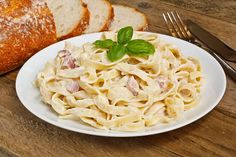
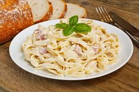
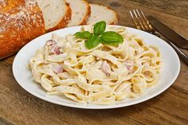
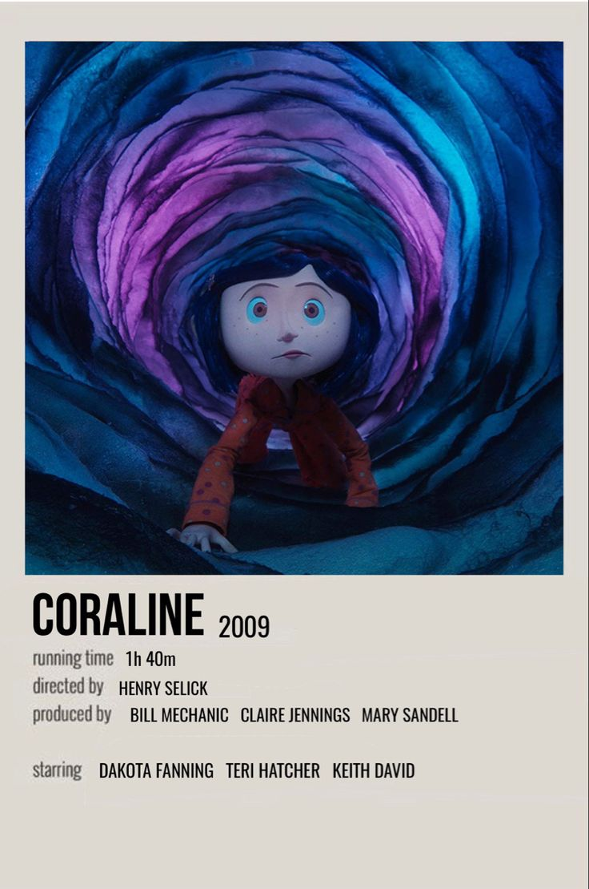
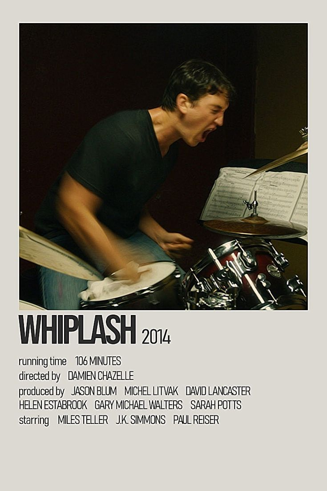
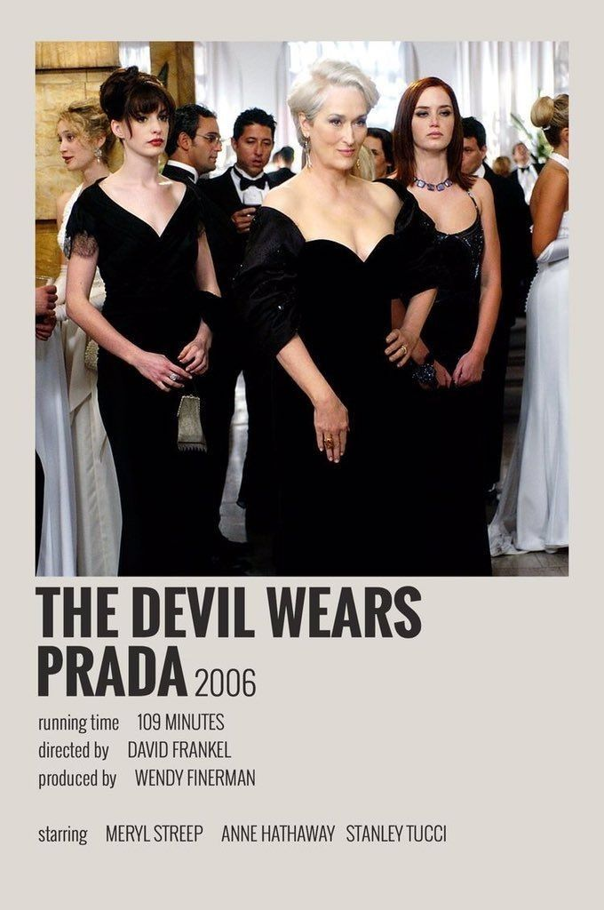
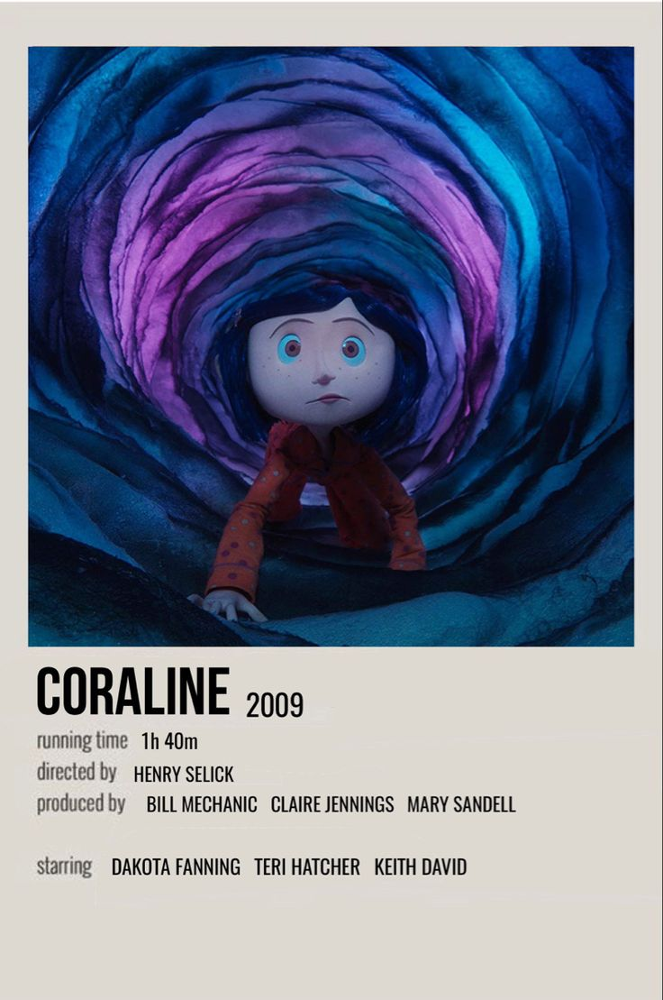
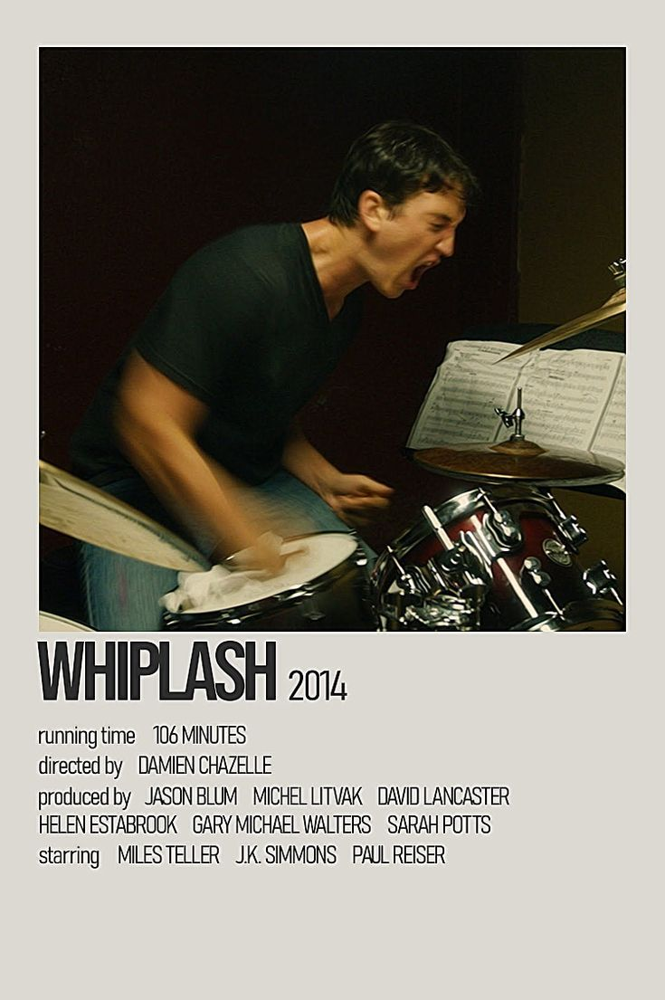
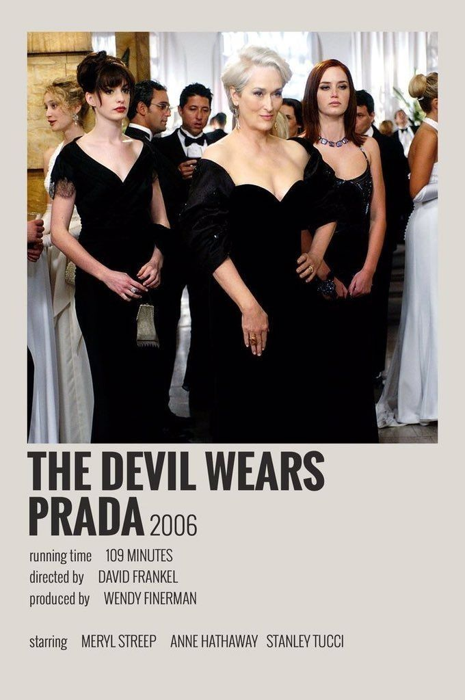

Lista de pratos favoritos


 

30 𝘥𝘦 𝘑𝘢𝘯𝘦𝘪𝘳𝘰 𝘥𝘦 2009
Olá, Não sei muito bem como começar a me apresentar, mas vou tentar dar o meu melhor para fazer uma apresentação minimamente aceitável. O meu nome e minha idade você já sabe (tenho que me lembrar disso porque, senão, vou acabar colocando essas informações aqui de novo ಠ﹏ಠ). Bom, eu gosto muito de assistir filmes, ler livros, ficar em casa dormindo, estar com minha família, sair com eles, ir à igreja, fazer as unhas, cozinhar, jogar, fazer compras e, o principal, brincar com a Chanel (minha cachorrinha ꈍᴗꈍ). Eu adoro muito os personagens da Sanrio, especialmente a Hello Kitty, e isso não é nem um pouco notável, né? Minhas cores favoritas são rosa bebê, amarelo, azul e vermelho. Meus esportes favoritos são vôlei, apesar de eu ser horrível jogando, e dança, mais especificamente o ballet. Olha, sei que você leu 'ballet' aqui e pensou: 'ballet não é um esporte'. MAS eu procurei no Google e é sim! Pelo menos foi o que ele me disse aqui. Enfim, eu amo o ballet. Fiz por um tempo, porém tive que parar porque não estava mais conseguindo bancar as aulas, infelizmente. No entanto, acabei me matriculando no instituto e me apaixonando pelo vôlei. Nunca tinha jogado vôlei na vida, meu primeiro contato com o esporte foi aqui e foi amor à primeira vista. Me divirto muito jogando. Às vezes é um pouco estressante, mas é divertido, principalmente quando acerto algo ou quando não sinto os olhares julgadores do meu time por ter errado alguma coisa (╥﹏╥). Tenho muito o que melhorar no vôlei, mas tudo bem. Cansei de escrever, foi isso!

 




